Context
Leadership gives the page a specific angle instead of repeating the navigation label.
Company / 01
Company opens as a clear aviation decision hub: what Aero offers, who it helps, why it matters, and which route to take first.
The first screen combines positioning, proof, primary action, and fast internal navigation, so people can act immediately or compare the rest of the company route with context.
Aerospace velocity hero
Select the closest route and Aero keeps the next step, proof, and follow-up expectation aligned with safety and premium reliability.
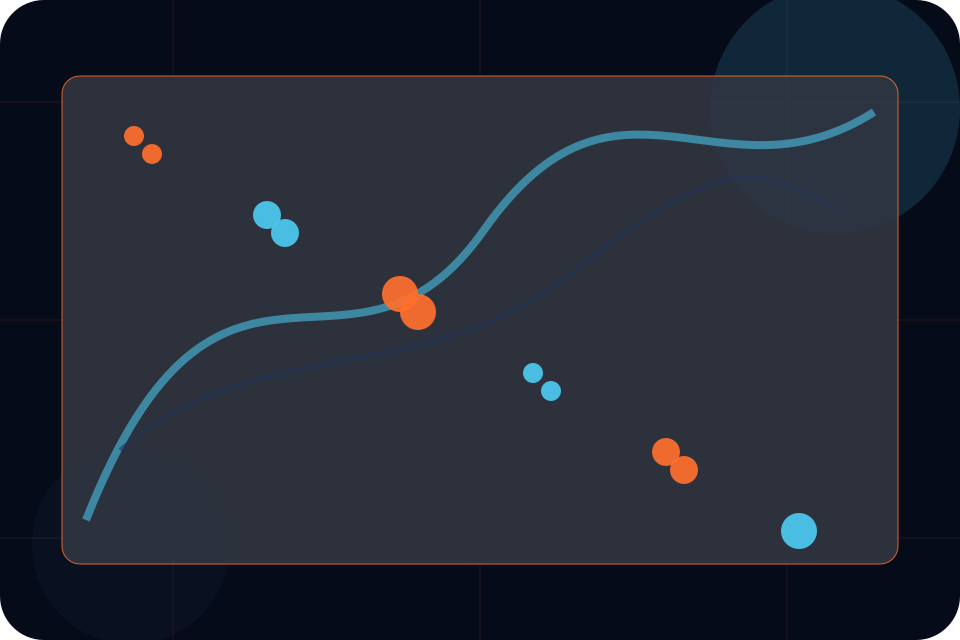
Company / 02
Leadership adds dark context to the company route, using the supersonic operations deck structure to support safety and premium reliability before visitors choose a next step.
Aero uses fleet specification cards and focused copy to make the decision easier to scan, aligning the section with safety and premium reliability rather than filling space.
Explore CompanyLeadership gives the page a specific angle instead of repeating the navigation label.
The fleet specification cards show what to compare, what to avoid, and what matters most for aviation, aerospace & air services visitors.
The final cue points to a useful internal route so the section keeps the journey moving.
Company / 03
Values adds dark context to the company route, using the supersonic operations deck structure to support safety and premium reliability before visitors choose a next step.
Aero uses fleet specification cards and focused copy to make the decision easier to scan, aligning the section with safety and premium reliability rather than filling space.
Explore Company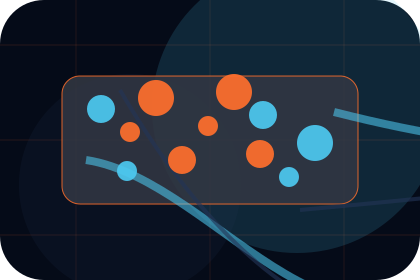
Values gives the page a specific angle instead of repeating the navigation label.
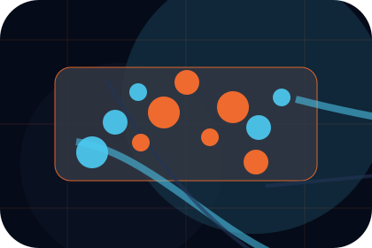
The fleet specification cards show what to compare, what to avoid, and what matters most for aviation, aerospace & air services visitors.
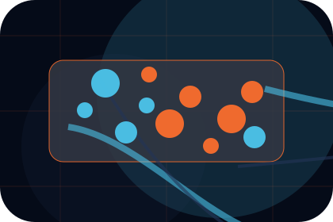
The final cue points to a useful internal route so the section keeps the journey moving.
Company / 04
Credentials gives the proof layer for company: standards, evidence, and reassurance that make the next decision feel grounded.
Instead of relying on vague claims, Aero presents visible standards, process cues, and proof artifacts that help aviation visitors judge fit.
Explore CompanyVisible proof that helps visitors believe the claims behind credentials.
The quality, safety, or operating expectation this section makes explicit.
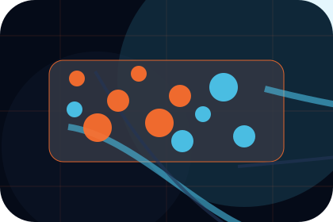
What becomes clearer before someone decides whether to request a charter.
Company / 05
Experience adds dark context to the company route, using the supersonic operations deck structure to support safety and premium reliability before visitors choose a next step.
Aero uses fleet specification cards and focused copy to make the decision easier to scan, aligning the section with safety and premium reliability rather than filling space.
Explore CompanyExperience gives the page a specific angle instead of repeating the navigation label.
The fleet specification cards show what to compare, what to avoid, and what matters most for aviation, aerospace & air services visitors.
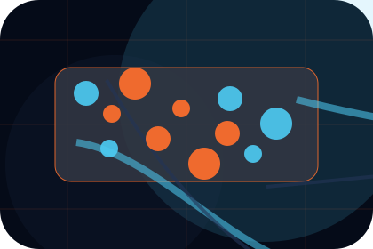
The final cue points to a useful internal route so the section keeps the journey moving.
Company / 06
Team introduces the people, roles, or specialist credibility behind Aero so the decision feels less anonymous.
The copy ties names, roles, credentials, or availability back to the decision on the page instead of treating profiles as decorative biographies.
Explore CompanyAero structures team around role, credibility, and a clear next route so visitors can compare the block quickly before they request a charter.
Request CharterCompany / 07
Standards gives the proof layer for company: standards, evidence, and reassurance that make the next decision feel grounded.
Instead of relying on vague claims, Aero presents visible standards, process cues, and proof artifacts that help aviation visitors judge fit.
Explore CompanyVisible proof that helps visitors believe the claims behind standards.
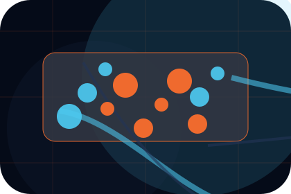
The quality, safety, or operating expectation this section makes explicit.
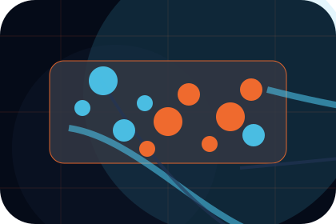
What becomes clearer before someone decides whether to request a charter.
Company / 08
Reputation adds dark context to the company route, using the supersonic operations deck structure to support safety and premium reliability before visitors choose a next step.
Aero uses fleet specification cards and focused copy to make the decision easier to scan, aligning the section with safety and premium reliability rather than filling space.
Explore CompanyReputation gives the page a specific angle instead of repeating the navigation label.
Company / 09
Trust gives the proof layer for company: standards, evidence, and reassurance that make the next decision feel grounded.
Instead of relying on vague claims, Aero presents visible standards, process cues, and proof artifacts that help aviation visitors judge fit.
Explore CompanyVisible proof that helps visitors believe the claims behind trust.
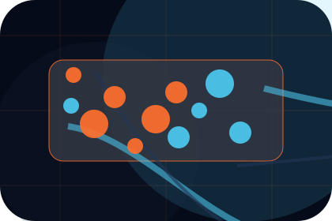
The quality, safety, or operating expectation this section makes explicit.
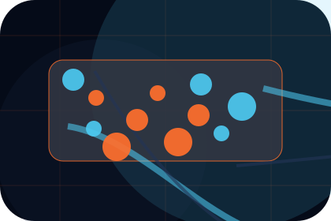
What becomes clearer before someone decides whether to request a charter.
Company / 10
Aero closes the company route with a clear action, a quick reminder of the value, and a low-friction way to request a charter.
Visitors who are ready can use the primary action. Visitors who are still comparing can scan the section links, proof, and support routes before they request a charter.
Request CharterThe final block keeps the choice simple: act now, compare one more proof route, or send enough detail for a focused response.
Request Chartersafety and premium reliability
An aviation site with speed-led hero, aircraft spec cards, route modules, safety proof, and charter enquiry. Company ends with a direct path to request a charter, plus enough context for visitors who still need to compare.
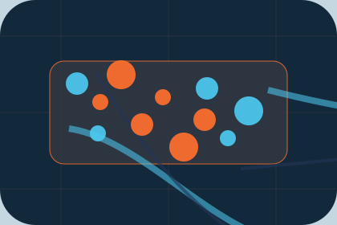
Request CharterInformation is provided for planning and should be reviewed for the final client, location, and operating rules.